Chapter 4 — The Magic Show
The failover drill was scheduled for 6:30 on a Tuesday morning in March, which meant Idris had been awake since five, drinking coffee the consistency of roofing tar and narrating his own actions like a bomb-disposal video. The plan was boring on purpose: kill the Postgres replica in prod, watch the platform degrade gracefully, watch the dashboard go amber, watch the alert fire, bring the replica back, write down the timings. Atrium had survived seven years; the drill was supposed to confirm the folklore.
Idris killed the replica at 6:31. Then he waited for the dashboard to notice.
It didn't. The health panel glowed the same serene green it had glowed all night. He refreshed it. He curled the actuator endpoint directly. {"status":"UP"}, smooth as a salesman. Meanwhile, two terminals over, the replica was — his word in the incident channel — extremely down. For forty minutes a real degraded dependency was invisible to every pane of glass the company owned, and the only reason anyone knew was that Idris had broken it himself, on purpose, with a calendar invite.
At standup he projected two JSON payloads side by side. Staging's health endpoint showed a db component, dutifully UP. Prod's showed nothing — no db, no replica check, no component at all. Just the top-level green lie.
"Last week's platform dependency bump went out Thursday," Idris said. "Version numbers only. Reviewed and approved." He did not look at Maya. He didn't have to; she'd approved it herself. A green diff, a tidy bump, the kind of PR you wave through between meetings.
Elias studied the two payloads for a long moment. Then he asked the room, mildly, "Why does this bean exist in staging and not in prod?"
Silence. Eight engineers, seven years of folklore, and not one person could say why any given health bean existed anywhere.
"Then nobody owns it," Elias said. He capped his pen. "Magic is just a mechanism you haven't read yet. Roadmap work is cancelled this afternoon. Bring lunch."
The investigation
Maya started where she always started: grep. ReplicaLagHealthIndicator appeared nowhere in Atrium's source. Not in config/, not in monitoring/, not in any @Configuration class she could find. The bean that was supposed to watch the database wasn't defined by any code the team had written in this repository.
At Meridian this would have been a line in main(), she thought. new ReplicaLagHealthIndicator(dataSource, maxLag), registered by hand — code I wrote, in a file I owned, that a dependency bump could not silently delete. That instinct — that wiring lives in user code — was exactly why she'd never thought to look anywhere else. The hand-wired reflex wasn't a head start this time. It was the blindfold.
The class lived in a separate internal repo: glasshouse-monitoring-spring-boot-starter, written in 2021 by an engineer who'd left in 2023. Inside, a small auto-configuration:
// glasshouse-monitoring-spring-boot-starter — migrated from
// spring.factories during the Boot 3 upgrade; nobody read it then either.
@AutoConfiguration
@ConditionalOnClass(ReplicaHealthProbe.class) // compiled against osprey-metrics 2.x
@ConditionalOnProperty("glasshouse.monitoring.replica-probe.enabled")
public class ReplicaMonitoringAutoConfiguration {
@Bean
HealthIndicator replicaLagHealthIndicator(
DataSource dataSource,
@Value("${glasshouse.monitoring.replica-probe.max-lag:5s}") Duration maxLag) {
return new ReplicaLagHealthIndicator(new ReplicaHealthProbe(dataSource), maxLag);
}
}
Next to it in the repo, a fossil: an empty META-INF/spring.factories with a comment — moved to AutoConfiguration.imports for Boot 3, delete after merge. Three years old. The actual registration now lived in META-INF/spring/org.springframework.boot.autoconfigure.AutoConfiguration.imports, one fully-qualified class name on one line. That file was the bean's birth certificate, and nobody at Glasshouse had ever read it.
"Reproduce it," Elias said. "Locally. Don't theorize."
⏸ Your call. Two conditions gate that bean; Thursday's bump changed only version numbers. Which gate failed in prod, why was the failure silent, and which -ility just died with the dashboard? Commit.
Maya booted Atrium with the prod property set and --debug on the command line. The ConditionEvaluationReport filled her terminal: every auto-configuration Boot had considered — hundreds of them — with the conditions each had evaluated and the verdict. She scrolled past DataSourceAutoConfiguration matched, past Jackson, past Tomcat, hunting. Then:
ReplicaMonitoringAutoConfiguration:
Did not match:
- @ConditionalOnClass did not find required class
'io.osprey.metrics.jdbc.ReplicaHealthProbe' (OnClassCondition)
The room — Idris and two others had drifted over — audibly exhaled. The dependency bump had taken osprey-metrics from 2.9 to 3.0. In 3.0 the vendor had repackaged: io.osprey.metrics.jdbc became io.osprey.metrics.probe.jdbc. The starter jar, compiled against 2.x, asked the classpath for a class that no longer existed at that address. And @ConditionalOnClass did precisely what it was designed to do: it backed off. Quietly. No ClassNotFoundException, no warning, no log line. The silence wasn't a malfunction — it was the feature, pointed the wrong way.
(If you called @ConditionalOnClass at the pause: take the second beat too. The -ility that died wasn't availability — the replica was allowed to fail; that was the drill. The real casualty gets named at the Wall, and billed to the supply chain.)
"That explains prod," Idris said slowly. "Why did staging never catch it?"
Maya pulled up the profiles. There it was, the second condition:
# application-prod.yml — the only place the module was ever switched on
glasshouse:
monitoring:
replica-probe:
enabled: true # staging never sets this — "staging has no replicas"
management:
health:
db:
enabled: false # 2021: "the custom check is better" — prod kept no fallback
Staging had never run the custom probe at all — the activating property only existed in the prod profile. So staging fell through to Boot's default db health contributor. That check is a connection-validity ping — Connection.isValid() against the primary — and it knows nothing about replicas. Staging therefore showed a database check, just not the one prod depended on. And prod had been left with no fallback: the original author had disabled Boot's default there because the custom check was "better," so when the custom probe stopped registering, no check remained at all. Both environments green. Both wrong. Differently.
Maya stared at the enabled: false line and thought of the sinkhole Elias had circled and dated in January — code is copied more often than it's read, inked beside a return type that leaked raw JPA entities across an API boundary. The note had never been about that one return type; it marked any working-but-wrong pattern that propagates by paste. Config was worse: yaml is copied with no compiler to object and no type to mismatch. This line had outlived its author by three years, meaning nothing to anyone who'd pasted profiles around it since.
"Two conditions and a profile," Elias said. "A murder weapon in three parts. Now — to the Wall. All of you."
What the senior sees
Elias drew two doors on the Wall, side by side, both opening into a box labeled ApplicationContext.
"Every bean enters through one of these. Door one." He tapped it. "Maya — what's inside @SpringBootApplication?"
"It's…" She caught herself before saying the magic annotation. "Three annotations. @Configuration, so the class can define beans. @ComponentScan, which walks downward from the main class's package — which is why AtriumApplication sits at com.glasshouse.atrium and everything lives beneath it. And @EnableAutoConfiguration."
"Door one is yours," Elias said. "Your packages, your stereotypes, scanned from the root down. Move the main class and half your beans vanish — loudly, at least. Door two is the one nobody here had read." He wrote AutoConfiguration.imports over the second door. "Boot does not scan jars hoping to find configuration. It reads a list. Every jar may carry one file at META-INF/spring/org.springframework.boot.autoconfigure.AutoConfiguration.imports; the import selector behind @EnableAutoConfiguration collects every such file on the classpath and gets a roll-call of candidate classes. Before Boot 2.7 the list lived in spring.factories — your fossil. A starter that still registers only there is silently dead on anything modern. Sound familiar?"
"Then the conditions," Maya said. "Each candidate is a gate, not a guarantee."
"Name the gates."
"@ConditionalOnClass — is this type on the classpath. The annotation itself is read from the class file's metadata with ASM, never loaded, which is why an auto-configuration can safely name a class that isn't there — and why its absence makes no sound. @ConditionalOnProperty — did the operator turn this on. @ConditionalOnBean and @ConditionalOnMissingBean — does the context already contain, or lack, a bean." She paused, seeing the shape of it. "And those last two only make sense if there's an order. They're evaluated against the beans registered so far."
"Which is why ordering is part of the contract," Elias said. "@AutoConfigureAfter, or the after attribute on @AutoConfiguration. Condition on a DataSource before DataSourceAutoConfiguration has run and your gate fails for a bean that was ten milliseconds from existing. And the back-off gate — OnMissingBean — is the whole social contract of Boot. Why does your @Bean beat Boot's default, every time, with no flag?"
Maya worked it through aloud. "User configuration is processed before auto-configuration is evaluated. So when Boot's default DataSource bean reaches its @ConditionalOnMissingBean check, my bean is already in the registry. Boot sees it and yields. I win by declaring, not by disabling." She looked at the yaml still on the screen. "Which is what 2021-guy should have done, instead of turning the default db check off with a property and leaving prod with no net."
So a starter is a Maven dependency that arrives already wired, she thought. At Meridian a jar was just bytes on the classpath — the wiring was always mine to write. This is dependencies, plus the code that registers them — and the registration travels inside the jar. The naming convention got two minutes — glasshouse-monitoring-spring-boot-starter, company-first, because spring-boot-starter-* belongs to Boot itself. The parent BOM got five. spring-boot-dependencies pins hundreds of third-party versions, tested together as one matrix. That was exactly why the bump of everything in the BOM had been safe, and why osprey-metrics, which wasn't, had walked in unread.
Elias capped his pen — by now the team knew it meant the mechanism was settled and the bill was coming. "Name what this incident spent. Idris."
"Operability. For forty minutes the system couldn't tell us the truth about itself."
"That's the symptom's -ility. Maya — the cause's."
"Evolvability," she said, slower. "But not ours — the supply chain's. We treated Thursday's bump as a chore; it was an architecture event. The blast radius ran from osprey's jdbc package, through a condition in a starter nobody had read, into prod's only health check — and the diff that detonated it was two characters of version number."
"Because the BOM is not a convenience," Elias said. "It's a contract. Inside its tested matrix, a bump moves you between tested points. Outside — where osprey lived from the day it got its own version line — the testing burden is yours whether or not anyone signs for it, and the upgrade gets a reviewer who asks what the jar promises the classpath and which conditions, in which repos, lean on that promise." He nodded at the condition report still on Maya's screen. "The second rule you've already run. The container will explain its own composition — every candidate, every gate, every verdict; --debug at boot, /actuator/conditions while it runs. A system you can interrogate is an operability property like any other: it exists only if you design the habit of asking. This morning the answer took four minutes to read and three years to think of reading."
Then Elias drew a ladder on the Wall and labeled the rungs top to bottom: CLI args > env vars > profile yml > application.yml > defaults. He drew it low, under the lifecycle column and February's smoke cloud (the proxy drawn as a cloud around the raw bean; the advice lives on that wrapper, and a this. call never crosses it). The Wall now read like the container itself — how a bean is born, then who decides whether it may be:

Resolution starts at the top: the first rung that defines a property wins. A lower rung speaks only when every rung above it stays silent.
"The other half of your murder weapon. A bean can be gated on configuration, and configuration is a layered fight. Higher rung wins. Idris — prove the ladder."
Idris, without ceremony, set GLASSHOUSE_MONITORING_REPLICA_PROBE_ENABLED=true on the staging deployment and let the pod restart. The env var outranked the profile file, and relaxed binding mapped the screaming snake case onto the kebab-case property without anyone writing a translation. The probe module woke up in an environment whose yml had never heard of it.
Meridian's homegrown loader had a crude version of this, Maya thought. Read the properties file, then let -D flags stomp it — two rungs, hand-coded, in a class from 2014. This is the same ladder grown five rungs tall, with the case-translation I'd never have thought to write. For once the hand-wired instinct is a head start, not a trap.
"One more thing," she said, and it came out before she'd decided to confess it. "At Meridian I wrote all of this wiring myself in main(), and I complained about the boilerplate constantly. Boot deleted the boilerplate, and I never once asked where it went."
"Every convenience is a debt of understanding," Elias said. "Today you paid one back."
The fix
The rewrite was small and merciless. Every condition became explicit, and every condition carried a comment saying why. The property binding moved out of stringly-typed @Value into a validated record. The difference is mechanical: @Value resolves one string at one injection point and fails wherever that bean happens to live, while @ConfigurationProperties binds the whole tree — typed, relaxed, validated at startup, and visible to the IDE's metadata. And the starter's own bean now wore the back-off gate, so any future app could override it by declaring:
@Validated
@ConfigurationProperties("glasshouse.monitoring.replica-probe")
public record ReplicaProbeProperties(
boolean enabled,
@DefaultValue("5s") Duration maxLag) { }
@AutoConfiguration(after = DataSourceAutoConfiguration.class) // the DataSource must exist first
@ConditionalOnClass(name = "io.osprey.metrics.probe.jdbc.ReplicaHealthProbe") // 3.x home, by name
@ConditionalOnBean(DataSource.class)
@ConditionalOnProperty(prefix = "glasshouse.monitoring.replica-probe",
name = "enabled", havingValue = "true")
@EnableConfigurationProperties(ReplicaProbeProperties.class)
public class ReplicaMonitoringAutoConfiguration {
@Bean
@ConditionalOnMissingBean(name = "replicaLagHealthIndicator") // override by declaring
HealthIndicator replicaLagHealthIndicator(DataSource ds, ReplicaProbeProperties props) {
return new ReplicaLagHealthIndicator(ReplicaHealthProbe.of(ds), props.maxLag());
}
}
The management.health.db.enabled: false line was deleted from the prod profile; Boot's default primary check now ran everywhere as the baseline, with the replica probe layered on top. The fossil spring.factories was finally buried. And because a silent absence had cost them forty blind minutes, Maya added the test the incident had shown was missing: a startup smoke test that boots the context with prod-shaped properties and asserts — by name — that the critical beans exist. Not that they work. That they exist. Absence had just been promoted to a failure class of its own.
It was, she realized while naming the test class, ADR-002's move aimed at a new target. The fitness functions from the morning staging died politely had turned architecture rules into executable claims that fail the build the moment they stop being true; this one made the container's composition the same kind of claim.
The runbook gained its shortest and most useful page: "My bean didn't get created" — run with --debug, read the ConditionEvaluationReport, find your class under negative matches, read which condition said no. The report is the answer; everything else is guessing.
And one more file rode along in the PR, the binder's fourth entry, half a page, dated:
ADR-004 — Config governance. Context: A transitive repackage inside a routine version bump silently removed prod's only database health bean; at standup nobody could say why any bean existed anywhere. Decision: Feature configuration binds through typed
@Validated @ConfigurationPropertiesonly — no raw@Valuein feature code; profiles overlay a shared base, never fork it; every third-party version rides the BOM or gets a named owner; a startup smoke test asserts critical beans exist by name; reading the--debugcondition report is a documented runbook skill, not archaeology. Consequences: Config becomes a schema, validated at boot; the BOM constrains upgrade freedom in exchange for a tested matrix; absence is now a failure class with a test that catches it.
⚖ Your move, architect
The PR was easy to approve. The real decision sat underneath it: what is Atrium's config strategy, now that everyone has watched a bean vanish without a sound? Commit before reading on.
- A — Fix the bean, keep ad-hoc
@Valueand tribal knowledge. Document the gotcha on the wiki; zero process cost today. - B — Govern it. Typed
@Validated @ConfigurationPropertiesonly, profiles that overlay rather than fork, all versions on the BOM, the bean-existence smoke test, condition-report reading as a runbook skill. - C — Centralize now. Stand up Spring Cloud Config Server: one source of truth, runtime refresh, every deployment pulls its config at boot.
The trade-offs, since you've committed: A costs nothing today and prices the next vanishing bean at a day of blind dashboards — and the tribal knowledge it leans on resigned in 2023; operability stays folklore. B is what Maya wrote into ADR-004: a schema tax — every knob needs a record, a constraint, a metadata entry — buying interrogability: config that fails loudly at boot instead of lying quietly at runtime, bean existence asserted by a test instead of assumed by memory. C buys runtime refresh nobody asked for, priced at a new failure domain in front of every boot — config server down, fleet can't start — plus a consistency question (which pods hold which config?) nobody was ready to answer in March. Same shape as January's move: B keeps C purchasable — typed records relocate to any backend — while C bought now is infrastructure in search of a requirement. (Chapter 14 prices central config honestly, once there's more than one deployable to feed.)
"Where does Kubernetes point at this thing, now that it's back?" Idris asked, mostly to himself, while reviewing the PR. "Liveness, readiness — we should fight about that properly someday." Nobody took the bait. It was March; that fight was a September problem, and nobody knew it yet.
On Friday, Maya gave her first-ever brown-bag, standing at the front of a room instead of the side of one. She titled the deck The Magic Show and walked the whole chain — @SpringBootApplication to its three annotations, the two doors into the context, the .imports roll-call, the conditional gates, the precedence ladder Idris had inked permanently onto the Wall beneath February's smoke-cloud proxy drawing and its caption, this. goes around the mirror. The penultimate slide was the one nobody had asked for and everybody photographed — the greenfield path, the same machinery with nothing on fire. New service → start.spring.io → pick the starters. The parent BOM pins every third-party version, so you declare dependencies and almost never a version number; auto-configuration conditions in a working baseline off your classpath. Your whole job is a typed @ConfigurationProperties record for your own knobs, an application-{profile}.yml per environment, and one calm read of the condition report before the first deploy. The magic was never the problem. Unread magic was.
Her closing slide was a single sentence: A bean is never magic. It is a list entry that survived its conditions.
Elias sat in the second row and wrote nothing in green the entire hour. Afterward, he stopped at her desk and pointed his pen toward the controllers package.
"You know how the beans are born," he said. "Now learn what they do all day."
The debrief — Ch.4, The Magic Show
How does
@EnableAutoConfigurationfind configurations, and how would you debug one that didn't apply? — Claim: Boot never scans jars for configuration; it reads a declared list and then lets conditions veto it. Mechanism:@EnableAutoConfigurationimports a selector that reads everyMETA-INF/spring/org.springframework.boot.autoconfigure.AutoConfiguration.importsfile on the classpath (spring.factoriesbefore Boot 2.7/3.0), then evaluates each candidate's@Conditionalgates —OnClassagainst ASM-read metadata so an absent class can't blow up the read,OnPropertyagainst the environment,OnBean/OnMissingBeanagainst the beans registered so far, which is why@AutoConfigureAfterordering is part of correctness; user config is processed first, so Boot's@ConditionalOnMissingBeandefaults yield to your declarations. Trade-off: silent back-off is the design — it's what lets your@Beanwin without flags — but the price is that absence produces no error, no log, nothing. Failure mode: a renamed class or an unset profile property deletes a bean with zero output; the diagnostic is--debug(or/actuator/conditions) and reading the ConditionEvaluationReport's negative matches — not grepping your own code, because the bean was never in your code.
THE ARCHITECT'S LENS
- -ilities at stake: Evolvability as a supply-chain property — the BOM is a tested-matrix contract: bumps inside it move between tested points; a dependency outside it makes every upgrade an architecture event with a blast radius someone must own. And operability as interrogability — a container that can explain its own composition (
--debug,/actuator/conditions) is a property only if reading it is a designed habit. Silent back-off spends operability to buy override-by-declaration; ADR-004 buys it back at the beans that matter. - The ADR: ADR-004 — config governance: typed
@Validated @ConfigurationPropertiesonly, profiles overlay (never fork), versions ride the BOM or get an owner, critical beans asserted by name in a startup smoke test, the condition report a runbook skill. Config becomes schema, validated at boot. - Rejected alternatives: ad-hoc
@Valueplus tribal knowledge (free today; the next vanishing bean costs a blind day, and the tribe resigned in 2023); Spring Cloud Config Server now (runtime refresh nobody asked for, a new failure domain in front of every boot — re-priced in Ch.14); disabling auto-configuration and hand-wiring everything (fighting the whole social contract to punish one unread jar). - Fight or lean: Lean on conditions and the BOM — silent back-off is what lets your
@Beanwin by declaring, and the matrix is tested so you don't have to. Fight the silence wherever your 3 a.m. depends on a bean existing: the framework can't know which absences are fatal to you, so promote those to named, asserted, smoke-tested existence.
Story anchors
- The green dashboard over a dead replica →
@ConditionalOnClassbacking off silently after the class moved packages in a routine bump. - The two doors on the Wall →
@ComponentScanfrom the root package (your beans) vsAutoConfiguration.imports(the jars' beans) — two distinct entrances into the context. - Idris's env-var flip on the staging deployment → the config-precedence ladder (CLI > env > profile yml > application.yml > defaults) plus relaxed binding mapping
SCREAMING_SNAKEonto kebab-case. - Elias's standup question — "Why does this bean exist in staging and not in prod?" — met by eight engineers' silence → a bean nobody can explain is a bean nobody owns; ADR-004 turns existence into an asserted, smoke-tested claim.
Interview ammo
- Kill-shot #6: How does
@EnableAutoConfigurationfind configurations, and how would you debug one that didn't apply? — It readsAutoConfiguration.importsfiles from every jar (not classpath scanning), filters each candidate through its@Conditionalgates, and the debug path is--debug//actuator/conditionsto read which condition vetoed your class. - Follow-up: Why does your own
@Beanoverride Boot's default — and when doesn't it? — User config registers before auto-config evaluates, so Boot's@ConditionalOnMissingBeansees your bean and backs off; it fails to back off when your bean's type/name doesn't match what the condition checks, and then you get both. - Follow-up: Why is
@ConditionalOnBeandangerous without@AutoConfigureAfter? — Conditions evaluate against bean definitions registered so far, so without ordering you can condition on a bean that's defined ten milliseconds later and wrongly back off; only condition on beans from configs you're explicitly ordered after. - Architect follow-up — The platform team proposes Spring Cloud Config Server "so this never happens again." Your call? — Wrong -ility: this incident was interrogability, not centralization — typed validated properties plus a bean-existence smoke test buy that without a new failure domain in front of every boot; central config gets priced when there are multiple deployables and a real runtime-refresh requirement.
Pointers → Playbook Ch.3–4 · examples/ch04_autoconfig/ + examples/ch03_starters/